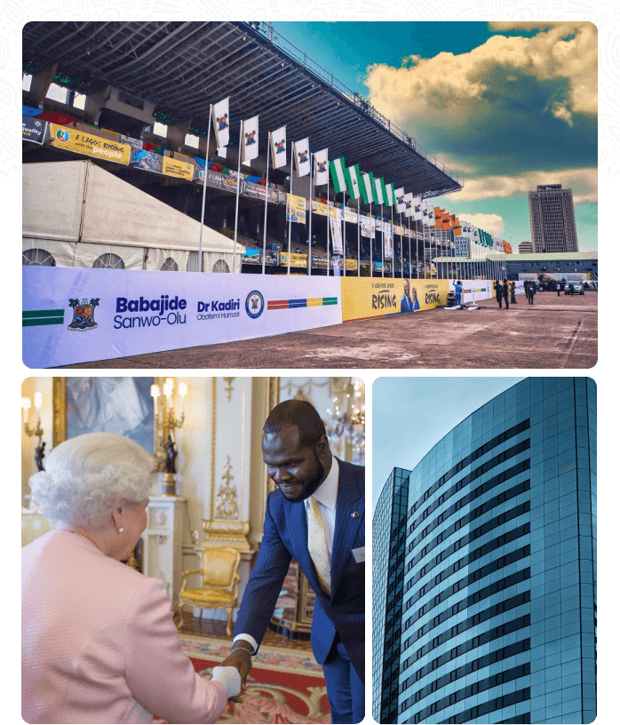

Innovative solutions in PR, branding, and storytelling.
Del-York Communications is a creative agency focused on public relations, strategic communications, content creation, digital solutions, branding, marketing, and media production.

Campaigns that connect global insight with local expertise.
The agency develops strategies and campaigns that help organizations communicate clearly, build identity, reach audiences, and respond to complex public moments.
Its work blends PR, branding, marketing, digital channels, and production into integrated communication systems.
From reputation to production.
Public Relations
Brand storytelling, media relations, crisis management, and event promotion.
Branding
Identity creation, market research, visual design, and brand storytelling.
Strategic Communications
Messaging, stakeholder engagement, and communication strategy.
Marketing
Campaigns, product launches, market analysis, and email marketing.
Digital Solutions
Web development, social media marketing, SEO, advertising, and video marketing.
Media Group
Film production, video content, multimedia storytelling, and full-service production support.